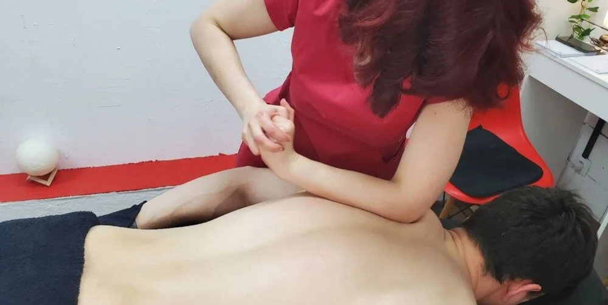
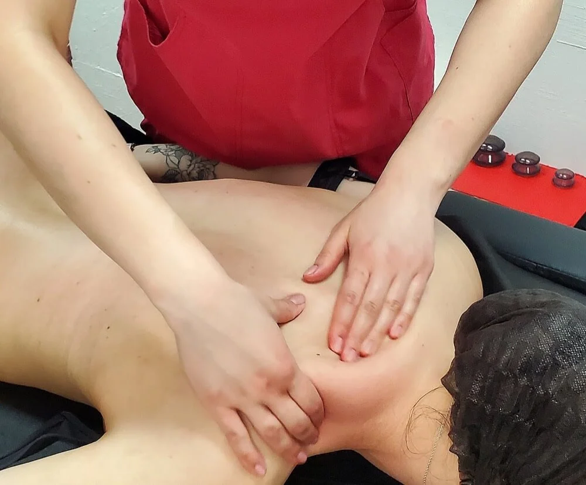
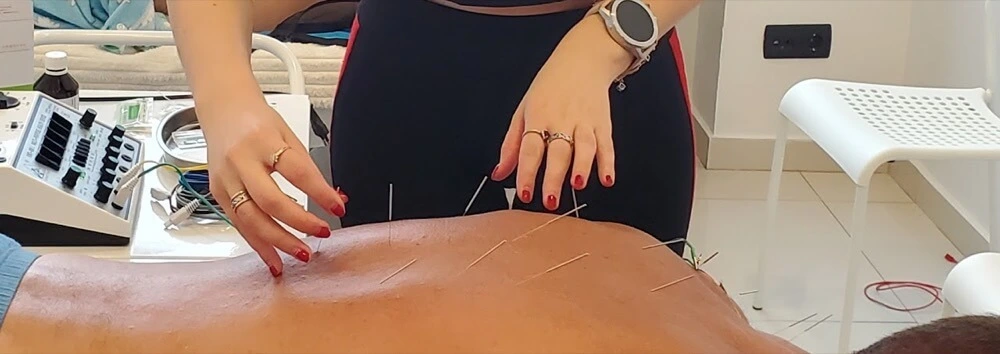

Мануальна терапія
Робота з м'язами, суглобами, зв'язками та руховими обмеженнями для зменшення болю й покращення біомеханіки.
Київ, лівий берег
Допомагаємо відновити рухливість, зменшити біль і повернутися до роботи, спорту та повсякденного життя після травм, операцій і тривалого перенавантаження.
Оцінюємо не лише ділянку, де болить, а й фактори, які могли призвести до проблеми.
Підбираємо вправи, мануальну роботу та навантаження відповідно до стану людини.
Мета терапії — легше рухатися, працювати, тренуватися й відпочивати без зайвих обмежень.
Підхід
Консультація триває близько 60 хвилин і включає збір анамнезу, огляд, фізикальне дослідження та пояснення плану відновлення. За потреби вже на першій зустрічі додаємо терапевтичні вправи, мануальну терапію або масаж.
Послуги
Поєднуємо клінічне мислення, мануальні техніки, масаж, кінезіотерапію та фізіопроцедури, щоб відновлення було послідовним і контрольованим.

Робота з м'язами, суглобами, зв'язками та руховими обмеженнями для зменшення болю й покращення біомеханіки.

Індивідуально підібране пропрацювання м'яких тканин для зменшення напруги, покращення кровообігу й відновлення після навантажень.

Вправи, суха голка, електростимуляція, перкусійний масаж і УХТ як частина комплексного плану відновлення.
Як проходить робота
Кожен етап має практичну мету: зрозуміти причину, зменшити симптоми, повернути рух і закріпити результат.
Збираємо анамнез, перевіряємо рух, силу, чутливість, обмеження та провокуючі фактори.
Пояснюємо, що може підтримувати біль або обмеження, і підбираємо реалістичний план відновлення.
Поєднуємо мануальну роботу, масаж, вправи й фізіопроцедури відповідно до задачі.
Оцінюємо зміни, коригуємо навантаження й даємо рекомендації для самостійної підтримки.
Відгуки
Кілька історій від пацієнтів, які зверталися до Recovery Line з болем, обмеженням руху або потребою у відновленні після навантажень.
Recovery Line допомогли з відновленням плеча після адгезивного капсуліту. Сподобався уважний підхід, індивідуальний план занять і підбір вправ. Плече функціонує нормально, болю немає.
Нога стала значно краще: вже ходжу без милиці й можу давати більше навантаження. Продовжую робити підтримувальні вправи за рекомендаціями.
Проходила реабілітацію після остеосинтезу променевої кістки. За два місяці реабілітації повернулася майже до всього, що робила до перелому.
Напишіть у Telegram або зателефонуйте, щоб підібрати зручний час прийому.